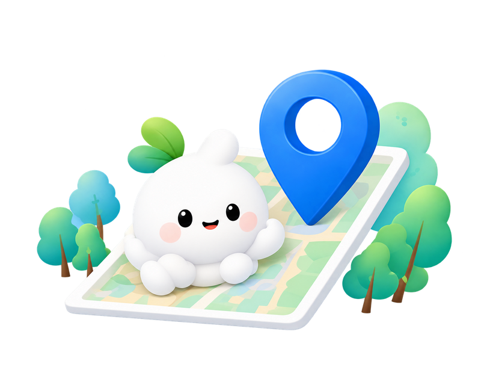

WHAT IS DIGITAL FOOTPRINT?
온라인 활동에도
흔적이 남아요.
디지털 흔적이란?
게시물과 계정 정보, 검색·방문 기록처럼 디지털 활동 과정에서 남는 정보예요. 직접 공유한 정보와 서비스 이용 중 기록되는 정보가 모두 포함돼요.
ACCOUNT
서로 다른 계정이 연결될 때
여러 서비스에서 같은 닉네임이나 프로필 사진을 사용하면, 공개된 정보로 동일인임을 추측할 수 있어요.
PHOTO
사진 속 배경도 단서가 돼요
명찰이나 건물 이름은 소속과 장소를 알려줄 수 있어요. 함께 찍힌 사람의 정보도 살펴보세요.
LOCATION
반복된 위치가 보여주는 패턴
공개된 장소와 시각이 쌓이면 자주 가는 곳이나 생활 시간대를 추측할 수 있어요.

SEARCH / ACTIVITY
검색과 방문도 기록으로 남아요
검색·방문·시청 기록은 서비스나 기기에 저장될 수 있어요. 공개 게시물과는 달리, 이 기록이 모두에게 보이는 것은 아니에요.
03 / CONNECT THE CLUES
흩어진 단서가
하나의 모습으로.
공개된 사진, 장소, 계정 정보가 연결되면 한 사람의 일상과 관심사를 추측하는 단서가 될 수 있어요.
실제 개인정보를 사용하지 않은 예시입니다. SEARCH는 검색 관심사를 본인이 공개·공유한 경우를 가정합니다.
PHOTO
LOCATION
SEARCH
ACCOUNT
나의 디지털 프로필 / 가상 예시
가상의 사용자 A
공개 사진 + 반복된 장소 + 공개된 검색 관심사 + 닉네임
→ 동일인 여부와 관심사를 추측하는 단서
04 / 나의 습관 체크
나는 어떤 정보를
남기고 있을까요?
내 습관과 가까운 항목에 체크하세요.
개인정보 입력 없이, 5개 질문으로 돌아봅니다.
캠페인용 습관 체크입니다.
실제 정보 유출 여부나 보안 수준을 진단하지 않습니다.